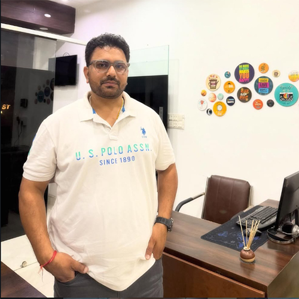

A mentorship-driven option-chain scalping framework built on discipline,
structure and real-market execution.
Our Vision
To remove guesswork and emotional trading by introducing a structured,
option-chain focused scalping approach where risk control comes first
and opportunity follows discipline.
Our Journey
The foundation of LTP Scalper was laid with one belief —
markets reward discipline, not prediction.
The core idea, strategic thinking and option-chain based innovation
were shaped under the mentorship of Mohit Patel,
whose deep understanding of market structure formed the backbone of the system.
The responsibility of execution, system architecture,
testing and real-market deployment was undertaken by Anshul Kumar,
ensuring that strategy translates into a practical,
disciplined and trader-friendly system.
Every rule inside LTP Scalper exists for one purpose only —
capital protection first, opportunity second.
Founder & Mentor
Strategy conceived through mentorship. Executed through discipline.
Concept Architect & Strategic Mentor
Mohit Patel
The intellectual force behind LTP Scalper.
His innovation, option-chain expertise and market insight
shaped the strategic logic and structure of the system.

Anshul Kumar
Founder of LTP Scalper, responsible for execution,
system design, testing and live-market implementation.
Focused on discipline, usability and risk control.
What Makes LTP Scalper Different
📊 Option Chain First Approach
🧠 Mentorship Driven Strategy
⚡ Rule-Based Execution
🛡️ Capital Protection Priority
Disclaimer
LTP Scalper is an educational and trading assistance platform.
We do not provide any guaranteed returns or profit assurances.
Trading and investing in financial markets involves risk,
including possible loss of capital. Past performance does not
guarantee future results.
Users are advised to consult their own financial advisors before
making any trading decisions. LTP Scalper, its founder, mentor
or associated entities shall not be responsible for any losses incurred.